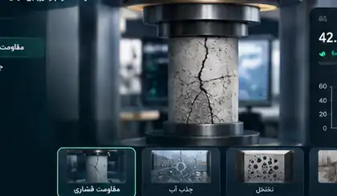

۶۰۴۴ / فصل 11
سامانه تعاملی
بررسی سریع
شبیهساز ارزیابی انطباق مقاومت فشاری
این ابزار آموزشی است. دادههای ورودی مربوط به سناریوی تمرینیاند و معیارهای ارزیابی از فصل ۱۱ استاندارد گرفته شدهاند.
منبع استاندارد: فصل ۱۱ — میانگین سه نتیجه متوالی نباید کمتر از fc باشد و هیچ نتیجه منفردی نباید کمتر از 0.9fc باشد.

AUTHORED RENDER / CH 11
مقاومت فشاری را بهعنوان «شاهد» بخوان، نه فقط یک عدد.
رندر محصول اینجا با معیار ارزیابی فصل همراه است تا رابطهٔ نمونه، آزمون، نتیجه و تصمیم روشن بماند.
01
نمونهٔ نمایندهنمونهبرداری و ساخت نمونه باید مطابق روش مرجع و با ردیابی انجام شود.
02
آزمون مقاومتنتیجه باید به نمونه، سن، روش و سابقهٔ آزمون متصل بماند.
03
قاعدهٔ انطباقمیانگین ۳ نتیجهٔ متوالی ≥ fc و هیچ نتیجهٔ منفردی < ۰٫۹fc نباشد.
04
تصمیمپذیرش یا بررسی باید بر پایهٔ معیار و دادهٔ قابل دفاع انجام شود.
SOURCE / فصل ۱۱1608-2 / 1608-3VISUAL / واقعی
معیارهای عددی توسط شبیهساز فصل ۱۱ جداگانه محاسبه میشوند؛ رندر صرفاً نقش آموزشی/دیداری دارد.